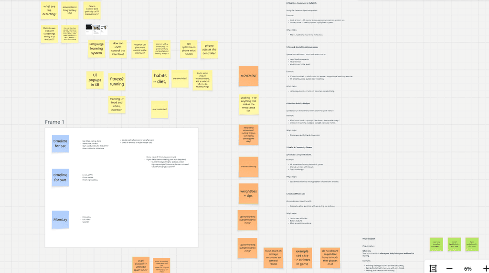
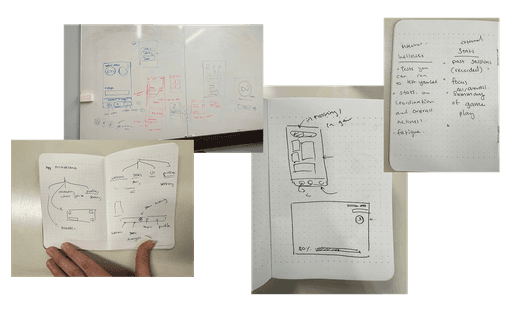
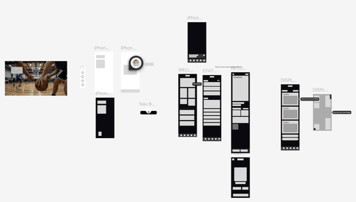
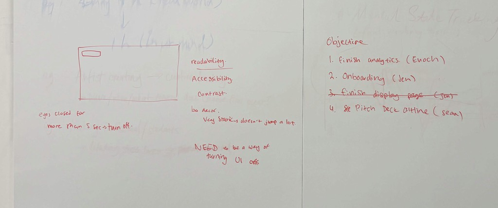
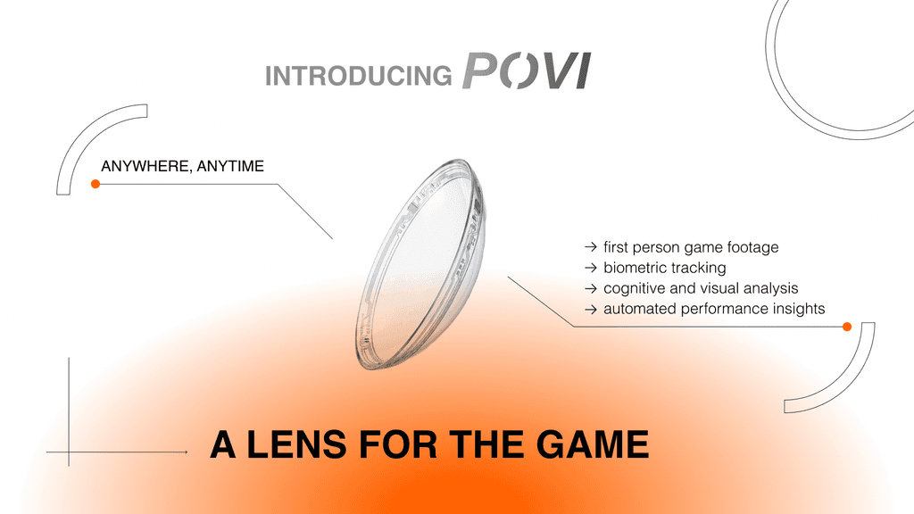
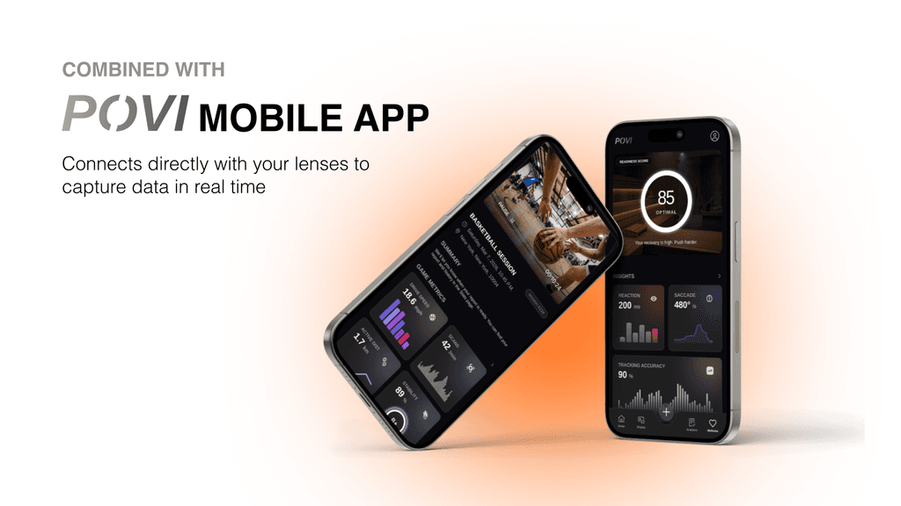
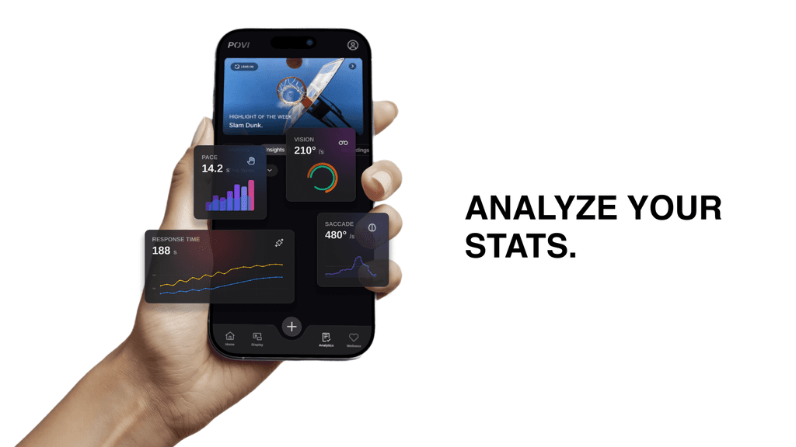
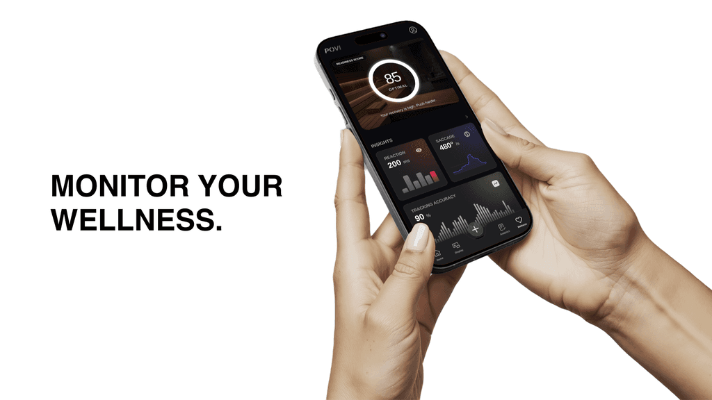
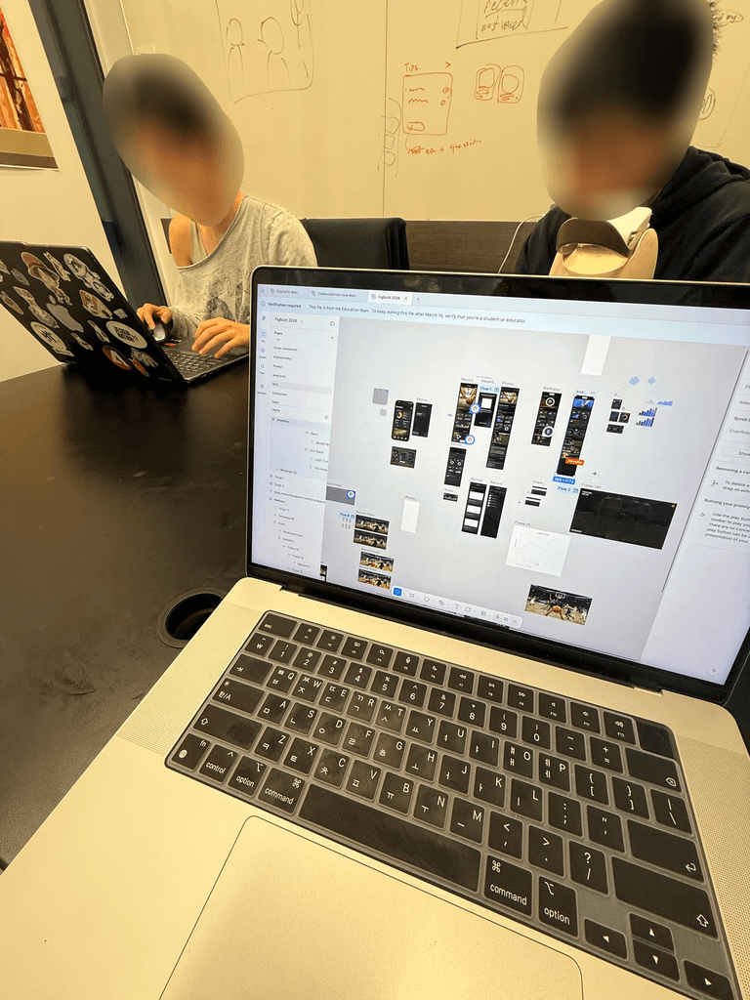

POVI
What does it mean to create speculative design for a technology that doesn't exist yet?
Context
Figbuild 2026
This project was created for Figma's 2026 Figbuild. The prompt revolved around designing to measuring and augmenting one of the human senses in a way that was previously undoable. The project also had to cause positive behavioral change.
THE BRAINSTORM
Designing for Athletes
We wanted to create something speculative yet grounded in reality, which led us to VR/AR contact lenses. Choosing between a cooking and athletic use case, we combined our personal interest in sports with a key question: what can contact lenses do that glasses and phones can't?

RAPID PROTOTYPES
Diving straight in
After getting the rough wireframe and the overall architecture of the app finalized, we dug straight into hi-fi.


THE CHALLENGE
How can we even begin to imagine, let alone design for, something that doesn't exist yet?
One of the main challenges we ran into was designing for the untraditional interface of contact lens. We had to consider it from multiple perspectives: 1. Accessibility 2. Eye strain 3. Inputs

FINAL PRODUCT
Introducing POVI
POVI is a smart contact lens built for athletes. It records first-person gameplay while tracking signals like focus, stress, and visual attention through pupil dilation, gaze direction, and blink rate. The companion app turns this data into insights, stats, and real-time performance feedback while also allowing users to modify what they see.
Check out our slide presentation here
Try out part of our prototype here




TEAMWORK + cOLLABORATION
The Dream Team.
We all pitched in, gave it everything we had, and each brought our own strengths to the table. We learned so much from one another, exchanging feedback honestly and openly. It was truly a dream team.

Reflection & Outcome
Tiring and Worth it
We came out of the competition feeling like we built something that we are proud of. The process not only taught me so much technical skills, from RAPIDLY iterating on mobile to working with various tools, but also the importance of collaboration and dedication in teamwork. Beyond grateful again for Sean and Enoch. Glad we pulled this off together :)
FUN SIDENOTE
Prototyping in unity
After submitting the project, I spent some time playing around in unity and experimenting with how this product could actually feel, if it did become a real product. I wanted to experience in first person how this product may feel like for users.
Thanks for reading!
Want to learn more? Curious about the details? Feel free to reach out to me at